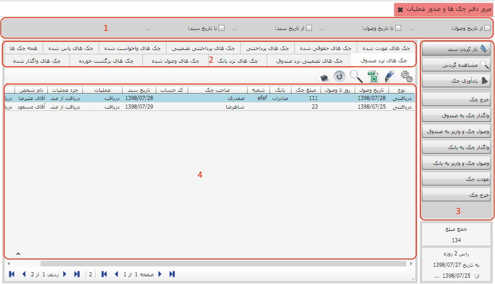
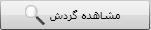

روی گزینه «مرور دفتر چک ها و صدور عملیات» کلیک کنید تا صفحه مربوط به آن باز شود:

همان طور که مشاهده می کنید این صفحه شامل تب هایی است که با انتخاب هر یک از این تب ها می توانید اطلاعات مربوط به آن ها را در جدول این صفحه مشاهده کنید. برای مثال در شکل بالا تب «همه چک ها» انتخاب شده است و در جدول آن لیست همه چک ها را با مشخصات آنها از قبیل نوع،نام صاحب چک،مبلغ چک و ... مشاهده می کنید.
چک های معرفی شده در سیستم بر اساس آخرین عملیاتی که روی آن ها صورت گرفته در تب های موجود دسته بندی شده اند. با انتخاب هر تب در نوار پایین صفحه «مرور دفتر چک ها و صدور عملیات» گزینه هایی متناسب با آن تب ظاهر می شوند که به کمک آن ها می توانید عملیاتی را روی چک هایی که در تب انتخابی قرار دارند انجام دهید. برای این کار کافی است چک مورد نظر را انتخاب کرده سپس روی گزینه مناسب با عملیات مورد نظرتان کلیک کنید. برای مثال در شکل بالا برای تب «همه چک ها» فقط گزینه «مشاهده گردش»

وجود دارد و با انتخاب چک مورد نظر و کلیک روی این گزینه می توانید گردش مالی چک انتخابی را مشاهده کنید. در شکل زیر تب « چک های نزد صندوق» انتخاب شده است، مشاهده می کنید که گزینه های دیگری مطابق با این تب ظاهر شده اند:
با اندکی دقت می توان فهمید که گزینه های موجود در پایین صفحه هر تب عوامل تخصیص داده شده به عملیات مختلف است و به ما نشان می دهد که در هر مرحله از گردش چک، چه عملیاتی می توان روی چک ها انجام داد و چه عملیاتی برای چک انتخاب شده مجاز می باشد. سایر تب ها را نیز می توانید به همین شکل بررسی کنید تا نحوه کار با صفحه «مرور دفتر چک ها و صدور عملیات» را به طور کامل فراگیرید.
در آخر به کمک نوار ابزاری که در بالای صفحه مرور دفتر چک ها و صدور عملیات قرار دارد لیست چک هایی که در جدول قرار دارند را بر اساس «از تاریخ وصول»، «تا تاریخ وصول»، «از تاریخ سند» و «تا تاریخ سند» فیلتر کنید تا بر اساس این فیلتر لیست چک ها به نمایش درآید.